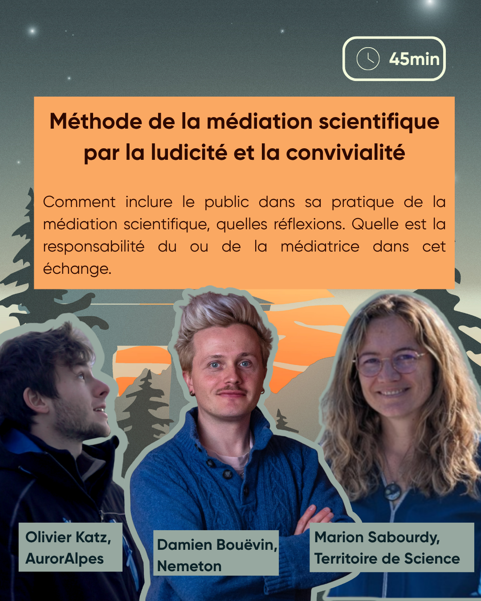

Méthode de la médiation scientifique par la ludicité et la convivialité


Résumé
Comment faire de la médiation scientifique un moment convivial et comment rendre le public acteur de la discussion. Quelle est la responsabilité du ou de la médiatrice dans cet échange.
intervenant·es
Olivier Katz est prévisionniste au Centre Opérationnel en Météorologie de l'Espace des Alpes (COMEA). Il est aussi membre fondateur et médiateur scientifique de l'association AurorAlpes dans laquelle il développe de nouvelles méthodes de médiation autour des sciences de l'univers.
Damien Bouëvin est Directeur délégué de l'association Nemeton · Biolab Café dans laquelle il conçoit les événements, les expéditions scientifiques, et la programmation de manière générale.
Marion Sabourdy est chargée de projets sciences et médias à Territoire de Sciences. Elle y anime le réseau des actrices et acteurs de la culture scientifique locaux et développe des projets numériques et des événements à mi-chemin entre science, imaginaire et pop culture.
